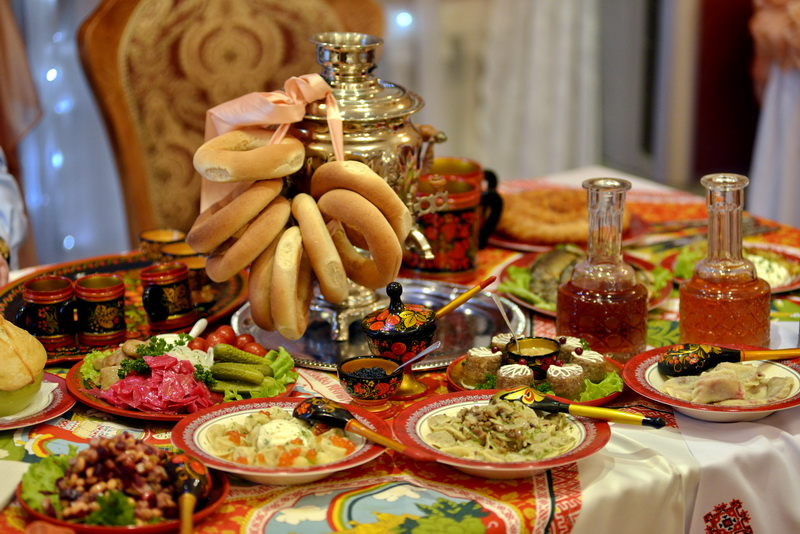

Традиционная русская кухня — это не просто набор рецептов, а важная часть культурного наследия. На протяжении веков она формировалась под влиянием климата, истории и традиций народа. Блюда, такие как щи, блины или каша, отражают уважение к продуктам и природе.
Сегодня интерес к национальной кухне возрождается. Люди ценят натуральные ингредиенты и простые способы приготовления. Совместная трапеза всегда была символом единства семьи и гостей.
Изучение русской кухни помогает сохранить связь с историей и понять менталитет предков. Наш проект посвящён тому, чтобы сделать эти традиции понятными и доступными для каждого.
